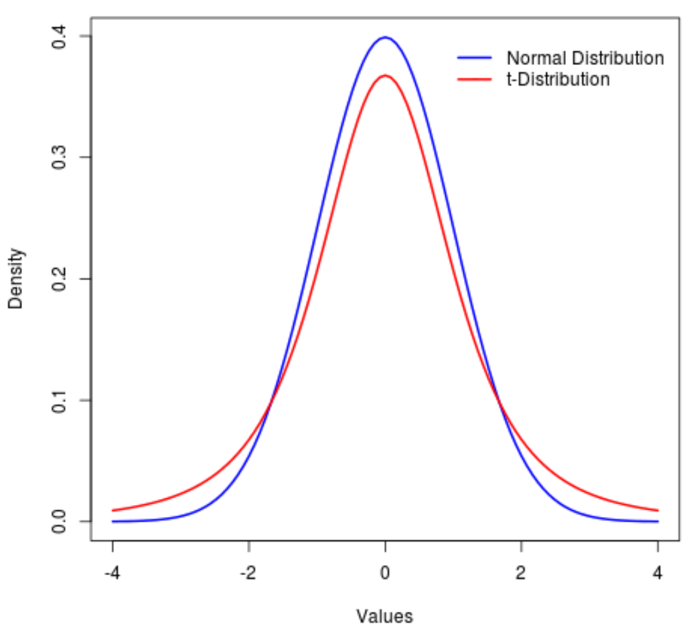

When constructing a confidence interval for means, you must again check three conditions:
The sample must be taken randomly (from an SRS)
The population size must be at least 10 times the sample size
\(N \ge 10n\)
You must be able to determine your sampling distribution is approximately normal
According to the Central Limit Theorem, if your sample size is 30 or greater, your sampling distribution will be normal
If the above condition is not met, you can use a normal probability plot to analyze the linearity of your data
When trying to create a sampling distribution for means, the following problem arises: How do you find the standard deviation of the population?
When we were working with proportions, we could estimate it from just knowing the sample proportion
However, there is no calculation we can do for means; our best estimate is the standard deviation of the sample, \(s_\overline{x}\)
Therefore, we assume the standard deviation in the interval to be the standard error of the sample mean
\(SE_\overline{x} = \frac{s_x}{\sqrt{n}}\)
This formula takes the standard deviation of the sample, and divides it by the square root of the sample size to estimate the standard error of the sample mean
Because we are using the standard error of the sample mean, we need to use a t-distribution to calculate the critical value rather than a normal distribution as we did for proportions
A t-distribution looks similar to a normal distribution, but has much longer tails
Always has a center of 0 - generally not moved or transformed much as normal distributions are
As you increase the sample size, the t-distribution approaches the standard normal curve

Recall that when we calculated the z-score, we did something like the following: \(z = \frac{\overline{x} - \mu_\overline{x}}{\sigma_x / \sqrt{n}}\)
\(\sigma_x / \sqrt{n}\) can also be represented as \(\sigma_\overline{x}\), as we divide the population standard deviation by the square root of \(n\) to find the sampling distribution's standard deviation
To find the t-score, we do this: \(t = \frac{\overline{x} - \mu_\overline{x}}{s_x / \sqrt{n}}\)
This is not used much for confidence intervals, but is used in the next section
All we did is replace the population standard deviation with the sample standard deviation, but when we do this, the sample standard deviation can vary, causing the longer tails
When the sample size is \(n\), we need to use a t-distribution with degrees of freedom \(n-1\)
Similar to with proportions, we need to find the area of one of these tails
We use the function invT(df: \(n-1\), value: \(a\)) on the calculator to find the area under the curve at \(a\) or below
Recall that \(a\) represents the length of one of the tails, for which directions were given on the previous page on its calculation
You also do not need to add a mean or standard deviation, as this function simply gives you critical values
You can also use Table C to find t-values, but it is lengthy and technology does it much faster
The critical value represented by a t-distribution is written as \(t^*\)
Therefore, a confidence interval for a population mean given a sample mean \(\overline{x}\) and sample standard deviation \(s_x\) is: $$ \text{interval} = \overline{x} + t^* \cdot \frac{s_x}{\sqrt{n}} $$
The previous approach for solving for sample size or confidence level is somewhat problematic now that we use \(s_x\), which is unknown to us, and \(t^*\), which itself depends on the sample size
The margin of error is: $$ ME = t^* \cdot \frac{s_x}{\sqrt{n}} $$
What we can do is estimate the population standard deviation by choosing a reasonable value from a similar study
Therefore, we can pretend that we use a z-score, and our new equation becomes: $$ ME = z^* \cdot \frac{\sigma}{\sqrt{n}} $$
Now, we can solve as detailed in the bottom of the notes for proportions here